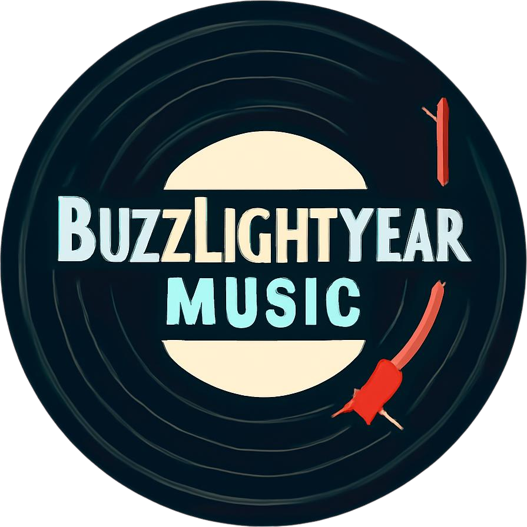

Tentang Kami
Mengenal BuzzLightyear Music
BuzzLightyear Music dibangun sebagai project HTML yang memadukan struktur semantik, tata letak responsif, dan data lagu nyata dari REST API. Targetnya sederhana: membuat pengalaman menjelajah musik yang enak dipakai, cepat, dan mudah dipahami siapa saja walaupun baru pertama kali mengunjungi situs ini.
01
Kode yang rapi dan mudah dibaca
Nama variabel, ID, dan class ditulis konsisten (camelCase & kebab-case) plus komentar penjelas di setiap berkas.
02
Data yang benar-benar hidup
Bukan data tulisan tangan — daftar lagu diambil langsung dari REST API setiap halaman musik dibuka.
03
Nyaman di layar apa saja
Dari ponsel mungil sampai layar lebar, tata letak menyesuaikan diri berkat Flexbox dan CSS Grid.
Hubungi Kami